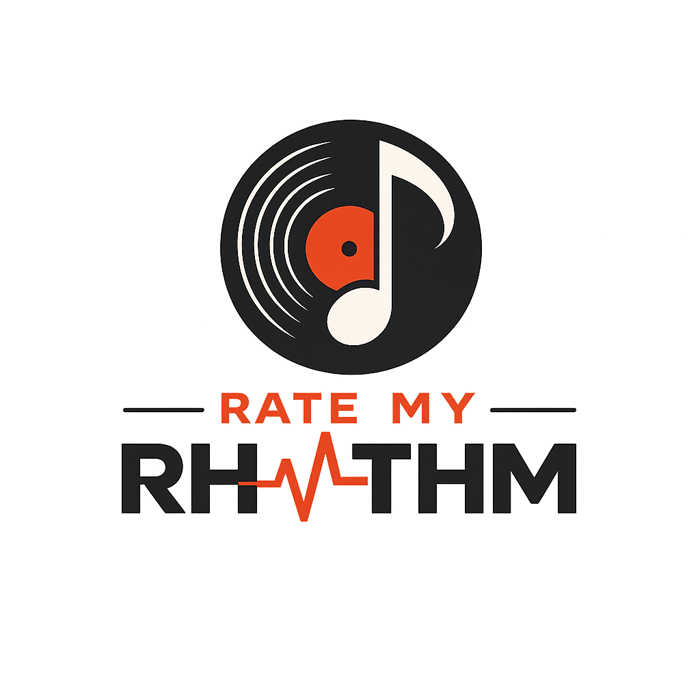

RATE MY
RHYTHM


Rate My Rhythm is a fan-driven music catalogue and review platform. Browse thousands of albums, listen to previews, rate records, and share your thoughts with a community that lives and breathes music. Built as a Progressive Web App — fast, installable, and available offline.
Rate My Rhythm is built with accessibility in mind — semantic HTML, ARIA roles and labels, keyboard-navigable interfaces, sufficient colour contrast, and screen-reader-friendly live regions. We aim to make music discovery available to everyone.